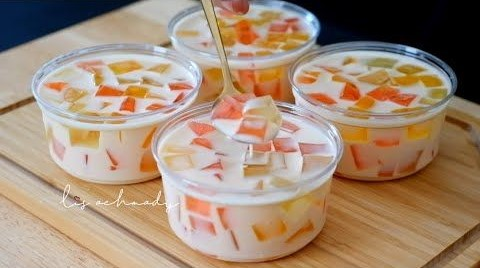
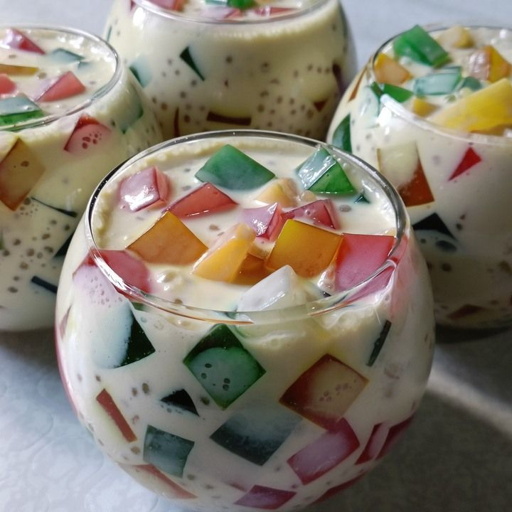
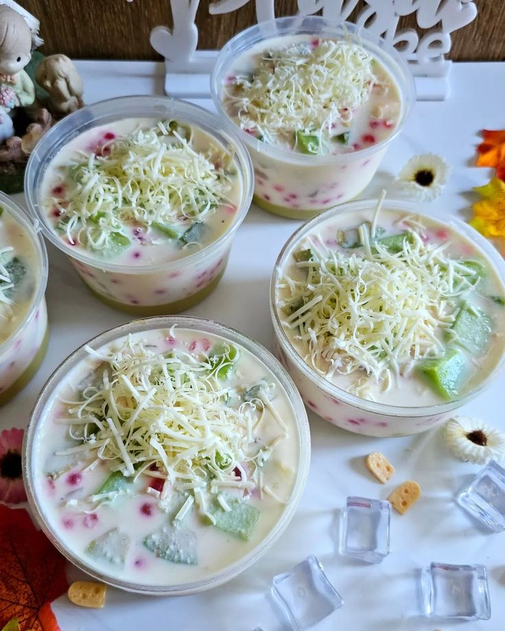
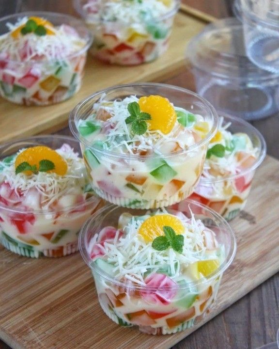
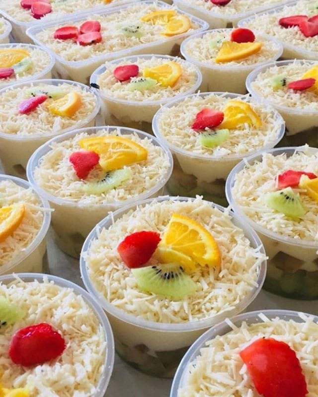

“

Rohmah
LikeSalad Jelly benar-benar menyegarkan! Rasanya pas banget, jelly-nya lembut dan susu segarnya bikin makin nikmat. Suka banget, pasti beli lagi!
“

Widiya
Jelly-nya super lembut, dan kombinasi susu serta yoghurtnya terasa creamy tapi tetap segar. Sempurna untuk camilan sehat sehari-hari!
“

Farida
LikeSalad Jelly ini beda banget! Rasanya fresh dan teksturnya lembut. Sangat enak dan bikin ketagihan. Cocok untuk dinikmati kapan saja!
“

Laila
Saya sangat menyukai LikeSalad Jelly! Teksturnya yang lembut dan rasanya yang manis sangat menyenangkan. Pilihan sehat yang lezat!
“
Saskia
Jelly ini sangat menyegarkan dengan perpaduan rasa buah yang alami dan susu segar. Benar-benar camilan yang sempurna!
“

Pipit
Saya terkesan dengan kualitas Likesalad.Jelly. Rasanya unik dan teksturnya lembut. Sangat cocok untuk teman santai di sore hari!